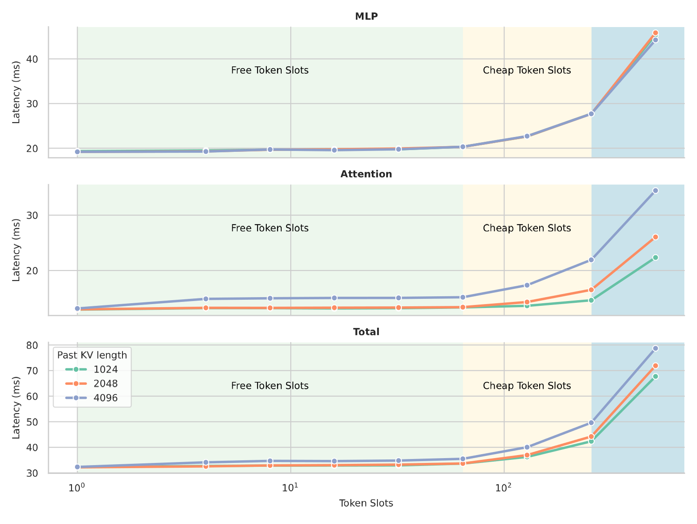
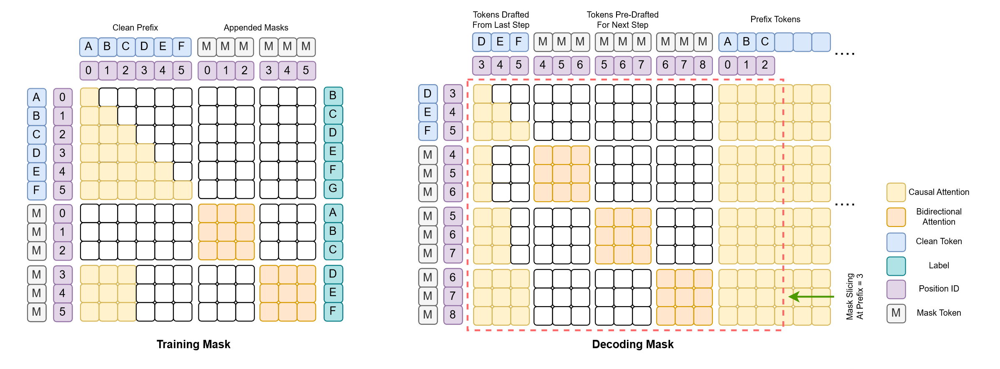
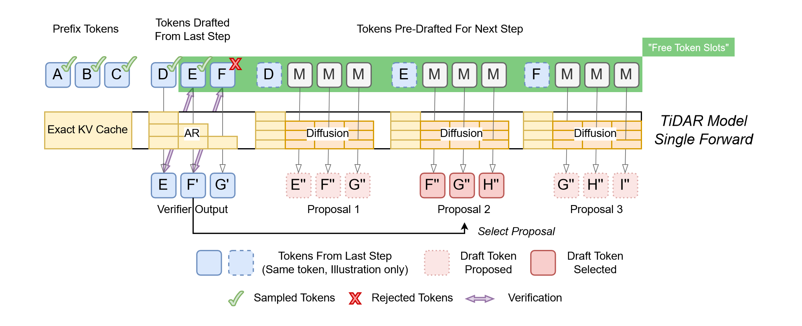
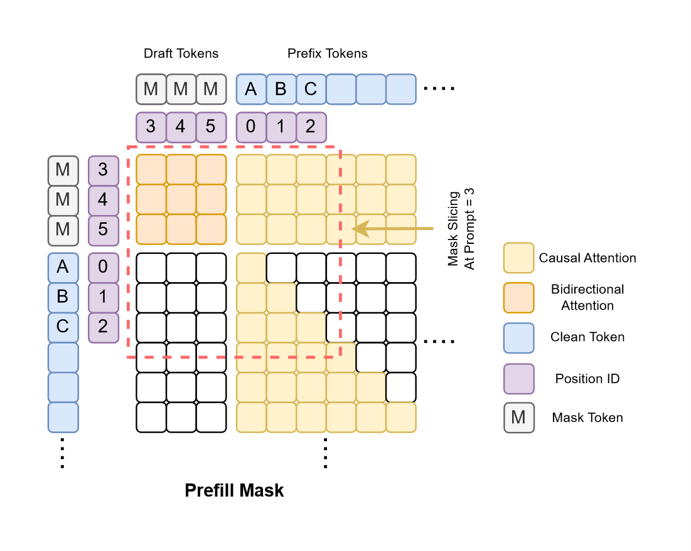
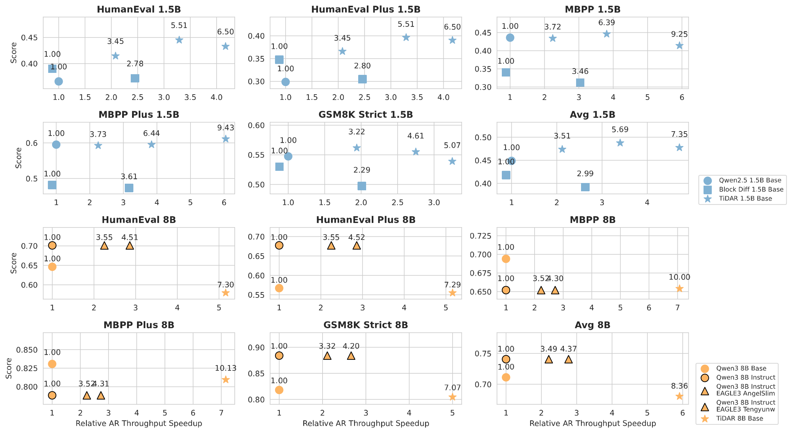
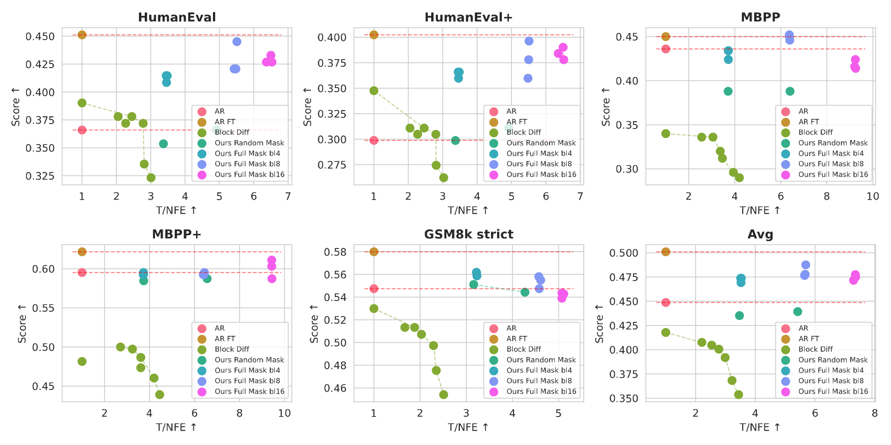
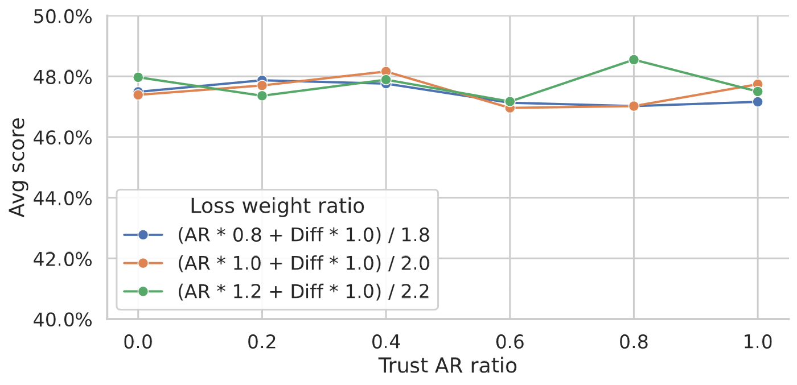

TiDAR：用扩散起草、用自回归定稿，一次前向全部完成
TiDAR: Think in Diffusion, Talk in Autoregression
代码与权重的状态为 2026-10-20 的查询结果。阅读状态、进度与收藏只保存在你的浏览器里。
逐节精读
这部分按论文的章节顺序，用本站自己的话把整篇论文从头讲一遍。读懂某个概念需要的背景知识，会在第一次用到它之前单独讲清楚（青色框）。每个结论都尽量说出“因为什么、所以什么”。标“推算”的数字是本站根据论文数据算出来的，标“估读”的数字是本站从原文图上读出来的，都不是论文原话。本页以 arXiv v1（2025-11-12，NVIDIA 技术报告，也是目前唯一的版本）为底本；论文以 CC BY 4.0 许可发布，所以本页直接放了原文的全部 7 张图（由本站从 arXiv 源文件的 PDF 图转成 PNG，未做其他修改），其余示意图由本站绘制。项目页和 MLSys 报告幻灯片里有论文正文没有的 SGLang 测速，本页单独标出。每节末尾有英文原文的链接。
0 导读：这篇论文解决什么问题
大语言模型生成文字时一个 token 一个 token 地来：每生成一个，都要把整个模型从头到尾算一遍。只服务一个用户的时候，这一遍计算的时间几乎全花在把几十 GB 的参数从显存搬到计算单元上，GPU 的算力大部分闲着。这意味着，如果在同一次前向里多算几个位置，时间几乎不会增加。论文把这些“多算也几乎不花时间”的位置叫作免费 token 槽。
有两类方法想用这些空闲的槽。第一类是扩散语言模型：它在一次前向里同时预测很多个被遮住的位置，本来就是并行的；可是一步同时定下好几个 token 时，这几个 token 是各自独立地挑出来的，彼此没有商量，所以质量明显下降。第二类是投机解码：先让一个便宜的草稿器猜后面几个 token，再让大模型一次前向把它们一起检查，保证质量；可是草稿器为了便宜只能做得很小，而且大多是一个一个地猜，猜的过程和检查的过程还得排队。
TiDAR 的做法是让同一个模型在同一次前向里干两件事。一部分位置用因果注意力（和普通自回归模型一样只看前面），检查上一轮的草稿，这是“用自回归说话”；另一部分位置放上一组组掩码 token，用块内双向注意力一步猜出下一轮的草稿，这是“用扩散思考”。因为事先不知道这一轮会接受几个草稿，它为每一种可能的接受结果都提前起草一份，检查完直接挑对应的那份，下一轮无需另起一次前向。前缀部分始终按因果注意力计算，所以它的 KV 缓存和自回归模型一样是精确的。
作者从 Qwen2.5-1.5B 和 Qwen3-8B 出发，分别继续预训练 50B 和 150B 个 token，得到 TiDAR 1.5B 和 8B。在单张 H100、批大小 1、原生 PyTorch 的条件下，两者平均每次前向产出 7.45 和 8.25 个 token，每秒产出的 token 数是同尺寸自回归模型的 4.71 倍和 5.91 倍；质量上，1.5B 在 6 个代码与数学任务上的平均分略高于原版 Qwen2.5-1.5B，8B 比原版 Qwen3-8B 平均低 2.78 分。论文 2025 年 11 月发布，后被 MLSys 2026 接收为口头报告。
读完这部分，你应该能回答这几个问题：
- “免费 token 槽”从哪来？有多少个？什么时候就不免费了？
- 扩散模型一步定好几个 token 为什么会掉质量？自回归验证怎样把质量拿回来？
- 一次前向里，哪些位置在验证、哪些位置在起草？注意力掩码长什么样？为什么一步要算 \(k(1+k)\) 个位置？
- 训练时为什么把扩散段全部换成掩码？两个损失怎么平衡？
- TiDAR 和投机解码、块扩散到底差在哪？它是“无损”的吗？
- 4.71× 和 5.91× 是和谁比、在什么硬件和批大小下测的？质量对比匹配了哪些条件？
1 引言：GPU 上的“免费 token 槽”，和扩散模型的两难
1.1 免费 token 槽：多算几个位置为什么几乎不花时间
GPU 做一次前向，要做两件事：把参数（和 KV 缓存）从显存读到计算单元，以及做矩阵乘法。两件事可以重叠进行，所以耗时大致等于两者中较慢的那个。这个看法叫屋顶线模型（roofline）。
拿一个 8B 参数的模型、BF16 精度（每个参数 2 字节）算一笔账。参数一共约 16 GB；H100 SXM 的显存带宽约 3.35 TB/s，读一遍要约 4.8 毫秒。如果这次前向只处理 1 个位置，每个参数只参与约 2 次浮点运算，总共约 16 GFLOP；H100 的 BF16 稠密算力约 989 TFLOPS，算完只要约 0.016 毫秒。也就是说，这一步 99% 以上的时间在等数据，计算单元几乎全在空转（推算，忽略注意力和内核开销）。
如果同一次前向处理 \(n\) 个位置，参数照样只读一遍，乘法却变成 \(n\) 倍。每读 1 字节参数能做的运算次数大约就是 \(n\)。H100 上两条“屋顶”的交点在每字节约 \(989/3.35\approx295\) 次运算，所以理论上 \(n\) 不超过两三百时，耗时几乎都由读参数决定，多算几个位置是白赚的（推算，真实内核达不到峰值，拐点会更早）。批处理能提高吞吐，靠的正是这一点，见 vLLM 精读 §1。
TiDAR 关心的是另一种用法：不是把不同用户的请求凑成一批，而是在同一个请求的一次前向里多放几个位置。这样做还有一个额外的好处：这几个位置读的是同一份 KV 缓存，KV 缓存也只读一遍；而凑批时每个请求都有自己的 KV 缓存，要各读各的。
自回归模型每一步只往模型里送 1 个位置（上一步刚生成的那个 token），预测下一个 token，于是只用了这么多空闲算力中的极小一份。论文用记号把这件事写得很直白：设前缀是 \(x_{\le t}\)、模型是 \(F\)，自回归模型做的是“给 \(x_t\) 这一个位置，预测 \(x_{t+1}\)”；而一个掩码扩散模型可以在前缀后面接上 \(k\) 个掩码 \(m_{t+1},\dots,m_{t+k}\)，一次前向同时预测这 \(k\) 个位置。只要两种前向都还处在“读数据为主”的区域，它们的耗时就差不多。多出来的那些位置，作者称为免费 token 槽。
到底有多少个槽是免费的？作者在单张 H100 上实测了 Qwen3-32B（批大小 1，FlashAttention 2），横轴是一次前向送进去的位置数，三条线分别对应已有 1024、2048、4096 个 token 的 KV 缓存：

下面这个演示可以自己验证这个量级。把 GPU 选成 H100 SXM、模型选成 Qwen3-32B，然后拖动 batch 滑块，看工作点什么时候越过屋顶线的拐点。要注意演示里的 batch 是“若干个各带 KV 缓存的请求”，它会随 batch 增加 KV 的读取量；TiDAR 的多个位置共享同一份 KV 缓存，所以实际情况比演示里还要“免费”一些。
1.2 扩散模型为什么用不好这些槽：一步多定几个，就得假设它们互相独立
掩码扩散语言模型（如 MDLM、LLaDA、Dream）训练时随机把句子里的一部分 token 换成特殊的掩码 token [M]，让模型用双向注意力（每个位置能看到整句话）把被遮住的 token 猜回来。生成时从一整行 [M] 开始，每一步让模型对每个还被遮着的位置给出一个概率分布，再挑其中一些位置“揭开”，填上采样到的 token；重复若干步，直到全部揭开。一步只揭开 1 个位置，质量最好，但步数等于长度，和自回归一样慢；一步揭开好几个，步数少了，质量却会下降。这个现象在 Fast-dLLM 精读 §2.3 里有详细的例子。
论文用两个概率式子把差别讲清楚。自回归模型生成整句话的概率，是一串条件概率的乘积，每个 token 都看得到它前面所有已经定下的 token：
掩码扩散模型在某一步里，给定当前部分被遮住的序列 \(\tilde{\mathbf{x}}\)，对每个位置分别给出一个分布。如果这一步要同时揭开一组位置 \(K\)，这组位置上的 token 就是分别从各自的分布里抽出来的：
（论文的写法还在外面套了一层对加噪过程 \(q(\cdot\mid\mathbf{x})\) 的期望，这里只保留和本节论点相关的部分。）右边的乘积意味着同一步揭开的几个 token 彼此“看不见”：模型给第 \(i\) 个位置打分时，并不知道第 \(j\) 个位置最终会填什么。如果这几个 token 本来高度相关，独立地抽就可能抽出一个不成立的组合。一步只揭开一个 token 时，这个问题不存在，因为下一步揭开别的位置时，已经把这个 token 当作条件了。论文还指出，如果规定严格从左到右、每步一个、训练时只遮后缀，扩散采样就退化成了自回归。
下面这个演示把同样的问题放在一个可以精确计算的小例子上：一句订机票的话里有出发城市和到达城市两个“两词城市名”，还有几个彼此无关的空。把置信度阈值 \(\tau\) 调低，每步揭开的位置变多、步数变少，同时“拼错城市”的概率上升；而那几个彼此无关的空，一起揭开并不会出错。这正是扩散模型的两难：并行度要靠“一起揭开”，而一起揭开只对互相独立的位置安全。
作者的理想是两头都要：计算时用扩散模型的方式，一次前向得到很多位置的分布（快）；采样时却按自回归的链式分解来定 token，让每个 token 都以前面所有 token 为条件（准）。论文认为后者的质量更好，既因为链式分解和语言从左到右的结构天然对齐，也因为每个 token 的条件里包含的上下文更多。
1.3 TiDAR 的做法：把一步的输入分成三段
TiDAR 每一步（也就是每一次前向）把送进模型的 token 分成三段：
- 前缀：已经定下来的 token。它们的 KV 缓存上一步就算好了，直接复用，这一步不再计算。
- 上一步提出的草稿：用因果注意力计算，得到它们在自回归分布下的预测，用来逐个检查这些草稿该不该接受。论文把这一步称为“用 \(p_{\mathrm{AR}}\) 做拒绝采样”，第 4 节会讲实际的检查规则。
- 为下一步预起草的位置：一组组掩码 token，用块内双向注意力一步猜出下一轮的草稿。因为这一步结束前不知道会接受几个草稿，它为每一种可能的接受结果都各起草一份。检查完毕后，挑出与实际结果对应的那一份，交给下一步。
三件事放在同一次前向里，靠的是一张精心设计的注意力掩码。只要后两段的位置数能塞进免费 token 槽，这一步就和自回归模型的一步差不多快，却能定下好几个 token。训练同样简单：在输入序列上用一张“因果 + 双向”的混合掩码，同一条训练样本上同时算自回归损失和扩散损失；扩散段的输入全部设成掩码。
论文列出的贡献有四条：提出 TiDAR 这种序列级的混合架构；给出训练配方，并在似然类和生成类任务上全面评测；用消融实验验证核心设计，并从扩散和投机解码两个角度分析它；以及在 1.5B 上做到相对同尺寸自回归模型“无损”的质量和 4.71 倍的每秒 token 数，在 8B 上做到 5.91 倍且损失很小。
2 背景与相关工作：它站在扩散模型和投机解码之间
2.1 扩散语言模型：并行度和质量的拉锯，再加上 KV 缓存
开源的扩散大模型 LLaDA 和 Dream，质量最好的设置都是每次前向只定 1 个 token。论文引用 APD 的数据说明并行的代价：Dream-7B 用基于熵的采样策略，在 GSM8K 上把每步定稿的 token 数从 1 提到 2，准确率就下降约 10%。原因就是上一节讲的步内独立性假设。为了缩小和自回归模型的质量差距，也有人改架构或改目标：E2D2 用编码器–解码器结构，让大的编码器处理干净 token、小的解码器处理带噪 token；EDLM 引入一个残差能量模型，减小训练和采样分布的不匹配。
自回归模型能缓存 KV，是因为因果注意力保证了一个位置的表示只取决于它前面的 token：后面再接多少 token，前面的 key 和 value 都不会变，算一次就能一直用（见 vLLM 精读 §2.2）。双向注意力下，每个位置都看得到后面的位置，后面一揭开新 token，前面所有位置的 key 和 value 理论上都会变，严格说每一步都得全部重算。
围绕缓存也有几条路。Fast-dLLM 按块解码，在解码当前块时把前缀（以及可选的后缀）的 KV 近似地缓存起来（见 Fast-dLLM 精读 §3）；dKV-Cache 走动态路线，逐步、延迟地缓存一部分 token（见 dKV-Cache 精读）。这两种缓存都是近似的。块扩散（Block Diffusion，也叫半自回归模型）则在块与块之间按自回归分解、在块内部用扩散，于是块与块之间可以用精确的 KV 缓存（见 块扩散精读 §3）。但块内部仍然是并行揭开，所以它依旧面对“块内一步定几个”和质量之间的取舍。
2.2 投机解码：草稿器要么弱，要么得一步一步来
投机解码（见 投机解码精读）的每一轮分两步。第一步，一个便宜的草稿器连续猜出后面 \(\gamma\) 个 token。第二步，大模型（目标模型）把这 \(\gamma\) 个 token 接在前缀后面，一次前向同时算出每个位置上自己的分布，这一步用的正是上一节说的免费 token 槽。然后从左到右逐个检查：草稿与目标模型“意见一致”就接受，第一次不一致就停下，并在这个位置按目标模型的分布补上一个 token。所以每一轮至少产出 1 个 token，最多 \(\gamma+1\) 个。
“意见一致”的判定用的是一种修改过的拒绝采样：以 \(\min\big(1,p(x)/q(x)\big)\) 的概率接受草稿 \(x\)（\(p\) 是目标模型的分布，\(q\) 是草稿器的分布），拒绝时从 \(p-q\) 的正部重新采样。可以证明，这样得到的输出分布和目标模型自己一个个采样完全相同，这就是“无损”（推导见 投机解码精读 §2.3）。温度为 0 时，规则退化成“草稿等于目标模型的 argmax 就接受”，输出和目标模型的贪心解码逐字相同。
草稿器越小越快，但猜得越不准；接受率一低，大模型的验证前向就白做了，整体反而可能变慢。为了让草稿器又快又准，后来的方法把目标模型的隐藏状态交给草稿器：Medusa 在隐藏状态上加几个解码头（每个是一层带残差的前馈网络），直接猜后面第 2、3、…个 token，再用树状注意力一次验证多条候选（见 Medusa 精读）；EAGLE 系列和 DeepSeek-V3 的多 token 预测（MTP）在隐藏状态上接额外的自回归层来逐个起草（见 EAGLE 精读、DeepSeek-V3 精读 §2.2）。论文认为这些做法有两个共同的局限：草稿器只有一两层，能力有限，加速比被它的容量卡住；草稿器仍然是自回归的，猜 \(\gamma\) 个就要串行跑 \(\gamma\) 步，而且起草和验证是先后排队的。
下面的演示是经典投机解码的加速比曲线：\(\alpha\) 是每个草稿 token 被接受的概率，\(c\) 是草稿器一步相对目标模型一步的耗时，成本模型是“每轮 \(\gamma c+1\) 个目标步”。因为起草开销随 \(\gamma\) 线性增长，曲线会在某个 \(\gamma\) 处到顶，\(c\) 越大到顶越早。TiDAR 想改的正是这个成本模型：它的起草不另花前向，开销被并进了验证那一步。
从投机解码的角度看 TiDAR，论文总结了三个优点：
- 草稿器就是基座模型本身，参数和计算都是整模型的，所以起草能力强。
- 起草是扩散式的，可以完全并行：所有掩码位置同时算，用上了整次前向的算力，而不像自回归 MTP 那样只能从最后一个 token 的隐藏状态往外推。
- 起草和验证在同一次前向里并行进行，没有“先起草、再验证”的串行等待。
| 方法 | 草稿器与基座共享 | 起草能力 | 起草本身并行 | 起草与验证并行 |
|---|---|---|---|---|
| 经典投机解码（独立的小模型） | 否 | 低 | 否 | 否 |
| APD（扩散模型起草，小自回归模型验证） | 否 | 高（但验证器弱） | 是 | 否 |
| EAGLE-3、DeepSeek-V3 MTP | 部分共享（另加层和头） | 中 | 否 | 否 |
| Apple MTP | 部分共享（另加层和头） | 中 | 否 | 是 |
| TiDAR | 是 | 高 | 是 | 是 |
上表是原文表 1 的内容，由本站译成中文。表里的 Apple MTP（Samragh 等，2025）是 TiDAR 预起草思路的直接来源：它在普通自回归模型后面接上若干掩码 token，用带门控的 LoRA 让模型学会一次预测后面多个 token，并提出一种“向未来按平方数量展开 token”的投机生成策略；上表把它归为“起草与验证并行”的一类。TiDAR 借用了“为每种可能的验证结果提前起草”这个思路，但起草方式换成了整模型的一步扩散。
3 训练：让一个模型同时学会“按顺序说”和“一次猜一块”
注意力掩码是一张表：行是“正在算输出的位置”（query），列是“可以被参考的位置”（key），格子允许就能看，不允许就看不到。普通自回归模型用的是下三角形的因果掩码：每个位置只能看自己和前面的位置。扩散模型用的是全开的双向掩码。两者可以拼在同一张表里，不同的行用不同的规则。
位置编号（position id）是告诉模型“这个 token 在句子里排第几”的数字，模型据此算位置编码（如 RoPE）。它是我们喂进去的，不必等于 token 在输入张量里的排列顺序。所以可以把一串掩码 token 接在整条序列的末尾，却告诉它们“你们是第 3、4、5 个位置”。
标签错位（label shift）：自回归训练里，第 \(i\) 个位置的输出要预测第 \(i+1\) 个 token，标签整体错开一位；掩码语言模型里，第 \(i\) 个位置的输出预测的是它自己被遮住的那个 token，标签不错位。TiDAR 两种都用，所以同一个位置号上，自回归输出和扩散输出可能在预测同一个 token，第 4 节和第 9 节会用到这一点。
要让两种模式发生在同一次前向里，最自然的办法是在序列层面混合因果注意力和双向注意力。块扩散已经用过类似的结构（见 块扩散精读 §4.2）：训练时把加了噪的序列和干净序列拼在一起，长度翻倍，注意力掩码是“块内双向、块间因果”。但块扩散的目的不是双模式，而是让扩散模型能用 KV 缓存、提高扩散生成的质量。TiDAR 对它做了一处改动：只有最后一个块（正在解码的块）是双向的，前面的前缀全部是因果的。落到训练上就是：干净的那一份序列整体用因果掩码，拼在后面的那一份按块划分，每个块内部双向，并且能看到干净序列里位于这个块之前的所有 token。

这个改动带来两个好处。第一，因为前缀是因果的，模型能像自回归模型一样算出链式分解的联合分布。推理时就能用这个分布来验证草稿，保证质量；评测似然时也能像自回归模型那样一次前向算完（第 7 节）。第二，训练时可以在前缀上算标准的下一词预测（NTP）损失。块扩散做不到这一点：它的干净段块内是双向的，第 \(i\) 个位置能直接看到第 \(i+1\) 个位置，如果让它预测下一个 token，答案就摆在眼前，这叫标签泄漏。而 NTP 损失比扩散损失“密”：扩散损失只在被遮住的位置上算，NTP 损失每个位置都有。两种损失同时用，同一份训练数据利用得更充分。Set Block Decoding（SBD）也采用了类似的混合结构。
每块随机遮一部分；损失只算被遮住的 3 个位置，个数随样本变化。干净段块内双向，只用来提供 KV，不能算下一词损失。
干净段每个位置预测下一个 token（自回归损失）；掩码段每个位置预测自己那个位置的 token（扩散损失）。两种损失的项数都等于序列长度。
块扩散和 SBD 给后半段加噪时，沿用传统扩散模型的做法：按某个分布抽一个遮挡比例，随机遮住一部分 token。TiDAR 换成了一个更简单的做法：后半段全部设成掩码。论文说这有三个好处：
- 扩散损失更密。每个掩码位置都参与损失，而不只是被随机遮住的那一部分。
- 两种损失好平衡。随机遮挡时，扩散损失有几项取决于这条样本遮了多少：以长度 4096 为例，遮挡比例 0.1 时约 410 项，0.9 时约 3,690 项（推算）；而下一词损失永远是约 4,095 项。两者的量级随样本跳动，很难用一个固定系数配平。全部遮住后，两种损失的项数都等于序列长度，用一个系数就能平衡。
- 推理时可以一步起草。推理时掩码组面对的正是“前缀干净、后面全是掩码”的情形，模型一步给出所有位置的预测，不需要多步去噪；训练和推理的情形完全一致。第 9 节的消融会检验这一点。
于是训练目标写成：
这里 \(S\) 是序列长度，\(\mathcal{L}_{\mathrm{AR}}\) 是干净段上用因果注意力算出的交叉熵（位置 \(i\) 预测 \(x_{i+1}\)），\(\mathcal{L}_{\mathrm{Diff}}\) 是掩码段上用块内双向注意力算出的交叉熵（位置 \(i\) 的掩码预测 \(x_i\)），\(\alpha\) 是平衡系数，论文写的取值范围是 \([0,1]\)，大多数实验取 \(\alpha=1\)，此时就是两种损失的简单平均。
- 全掩码训练意味着模型从没见过“一个块里有些位置已经揭开、有些还没揭开”的输入。所以 TiDAR 的“扩散”部分其实只会一件事：给定干净的前缀，一步同时猜出后面一整块，每个位置各猜各的。它更像一个用整个模型做的多 token 预测器，而不是能反复去噪的通用扩散模型（本站的解读）。这对 TiDAR 够用，因为推理时它只做一步起草。
- 训练序列长度翻倍：4096 个干净 token 加 4096 个掩码，一共 8192 个位置。线性层的计算量大约是同样数据下自回归训练的两倍（推算），注意力部分借助稀疏掩码可以跳过大量空白格。论文在局限里提到，这也让长上下文训练更麻烦（第 10 节）。
4 推理：一次前向里，验证上一轮，同时为下一轮起草
论文先讲了怎样衡量生成效率：要同时看三件事，一共要跑几次前向、每次前向定下几个 token、每次前向花多少时间。扩散模型、MTP、投机解码各自只优化了其中一部分，结果总要在延迟、质量和计算密度之间做取舍。TiDAR 想一起解决。
生成开始时，模型用因果注意力编码提示，同时在后面接一块掩码、用双向注意力一次起草出第一份草稿（这一步的掩码见第 5 节）。之后每一步都做两件事：
- 验证：上一步留下的草稿作为普通 token 输入，用因果注意力计算。它们每个位置的输出就是自回归分布下“下一个 token 应该是什么”，拿来和后一个草稿比较，决定接受到哪里。
- 预起草：同时，为“接受到第 1 个草稿”“接受到第 2 个草稿”……每一种可能的结果，各接上一组掩码，用块内双向注意力一步猜出下一轮的草稿。这个“对所有可能的结果都提前起草”的做法，论文说是受 Apple MTP 的启发。
这样，无论这一步接受了几个草稿，下一轮需要的草稿都已经算好了，直接拿来用。起草只用一步扩散（沿用 SDLM 的一步起草做法）；作者发现一步起草的质量已经足够让接受率很高，这也是训练时把扩散段全部设成掩码的原因。

把这个例子按位置逐个走一遍，就能看清楚每个位置在做什么：
| 输入段 | token（位置号） | 注意力能看到 | 这个位置的输出 |
|---|---|---|---|
| 前缀 | A B C（0–2） | 只提供缓存好的 KV，本步不计算 | — |
| 草稿 1 | D（3） | 前缀 + 自己（因果） | 预测位置 4：E |
| 草稿 2 | E（4） | 前缀 + D + 自己（因果） | 预测位置 5：F′ |
| 草稿 3 | F（5） | 前缀 + D E + 自己（因果） | 预测位置 6：G′ |
| 掩码组 1 | M M M（4–6） | 前缀 + D；组内互相看 | E″ F″ G″ |
| 掩码组 2 | M M M（5–7） | 前缀 + D E；组内互相看 | F″ G″ H″ |
| 掩码组 3 | M M M（6–8） | 前缀 + D E F；组内互相看 | G″ H″ I″ |
- D 是上一步已经定下的 token（见下文），直接接受。
- 位置 4：验证给出 E，和草稿 E 相同，接受 E。
- 位置 5：验证给出 F′，和草稿 F 不同，拒绝 F，到此为止。本步定稿 D、E 两个。
- 接受到了 E，所以取“以 D、E 为条件”的掩码组 2 的输出 F″ G″ H″ 作为下一步的草稿。位置 5 上真正落下的 token 由验证结果决定，它成为下一步的“草稿 1”。
- D、E 的 KV 留在缓存里；F 的 KV 被驱逐；掩码位置的 KV 从不保存。
为什么草稿的第一个 token 总是被接受？看解码掩码就明白了：掩码组只有“以 D 为条件”“以 D、E 为条件”“以 D、E、F 为条件”三组，没有“D 也被拒绝”时要用的那一组。这说明 D 不是一个待检验的猜测，而是上一步验证时已经在这个位置落下的 token（相当于投机解码里每轮补上的那一个）。所以每一步至少定稿 1 个 token，最多定稿 \(k\) 个；论文报告的“每次前向的 token 数”（T/NFE）就是这个数的平均值。项目页也明确说，和投机解码一样，每次前向至少接受一个 token。
如果把每个草稿被接受的概率粗略地看成同一个数 \(\alpha\)，并假设各位置独立，那么一步期望定稿的 token 数是 \(1+\alpha+\dots+\alpha^{k-1}=(1-\alpha^{k})/(1-\alpha)\)。按 \(k=16\) 反推，8B 的平均 8.36 个对应 \(\alpha\approx0.905\)，1.5B 的 7.35 个对应 \(\alpha\approx0.88\)（推算，8.36 和 7.35 是 5 个代码与数学任务上的平均，见第 8 节）。也就是说，一步扩散给出的草稿，大约九成会被自回归验证认可。这个独立性假设很粗，只用来感受量级。
代价：一步要算多少个位置。每一步的输入是 \(k\) 个草稿，加上 \(k\) 组、每组 \(k\) 个掩码，一共 \(k+k^{2}=k(1+k)\) 个位置。论文在 §3.3 的脚注里给出的正是这个数：\(k=3\) 时 12 个，\(k=16\) 时 272 个。它随 \(k\) 按平方增长，而普通投机解码的验证只需要 \(k+1\) 个位置左右。
和图 1 对照可以看出，\(k=16\) 的一步已经走出了“免费”区间，接近“便宜”区间的上沿。所以 TiDAR 的一次前向并不和自回归的一步一样快，第 8 节会从实测数字反推出它大约贵 40%–60%。这正是草稿长度 \(k\) 要权衡的地方：\(k\) 越大，每步可能定稿的 token 越多，但每步要算的位置按平方增长，越来越不免费。
- 论文把验证称为“拒绝采样”，但正文描述的实际规则是：在每个草稿位置上取一个确定的预测（argmax），和草稿逐字比较，相同就接受。这是投机解码在温度为 0 时的特例，论文没有给出随机采样时的接受概率公式，也没有说明评测用的温度（从规则看应是贪心解码）。
- 验证用的预测不一定只来自自回归输出。因为扩散段不错位，掩码组的第一个位置和前一个草稿的自回归输出预测的是同一个位置（如图 2 中 E 与 E″、F′ 与 F″），论文允许把两者的 logits 按系数 \(\beta\) 混合后再取 argmax（第 9 节）。当 \(\beta=1\)（只信自回归）时，按这条规则，输出应当等于 TiDAR 自己的自回归模式逐个贪心生成的结果（本站推论），而不是原版 Qwen 的输出。
- 论文没有明说第一个不一致的位置上，最终落下的 token 是混合 logits 的 argmax 还是被选中提议的第一个 token；\(\beta=0\)（只信扩散）时两者是同一个。上面走一遍时按“由验证结果决定”来写，这是本站对 §3.2 和 §4.4.3 的理解。
5 工程细节：掩码只建一次，KV 缓存只增不重算
先说训练侧的一个细节：因为扩散段全部是掩码，两种损失的项数一样、尺度相近，所以平衡很容易，大多数实验直接取 \(\alpha=1\)，不同 \(\alpha\) 的对比在第 9 节。
FlexAttention 是 PyTorch 提供的一个注意力接口：用户写一个小函数，说明“第 \(q\) 个位置能不能看第 \(k\) 个位置”，PyTorch 把它编译成一个融合好的注意力内核。为了快，它会事先把整张注意力表切成小方块，记下哪些方块完全看不见、可以直接跳过，这份记录叫块掩码（block mask）。构造块掩码本身要花时间；如果每一步的掩码都不一样、每步都要重建，这部分开销就会吃掉不少速度。
TiDAR 利用了一个事实：每一步送进模型的位置数都一样（\(k(1+k)\) 个），注意力的模式也一样，变的只有前缀的长度。于是作者把输入重新排列，把“草稿 + 掩码组”放在前面，前缀放在后面，在模型初始化时就建好一张形状为 \(\big(k(1+k),\ k(1+k)+\text{最大序列长度}\big)\) 的大掩码。每一步只要按当前前缀长度，截取这张大掩码的前若干列即可，不用重新计算。原文图 3 的右半（第 3 节）画的就是这件事：行是 3 个草稿和 3 组掩码，列先是草稿与掩码、再是前缀；所有行对前缀都是全可见的（浅黄），红色虚线框表示前缀长度为 3 时截取的范围。因为前缀那几列对每一行都一样，前缀变长时只需要多截几列。
精确 KV 缓存。和块扩散一样，TiDAR 支持精确的 KV 缓存，而不像传统扩散模型那样只能近似。做法是：每一步把所有按因果注意力算过的 token（也就是本步的草稿）的 KV 先全部存下；如果实际接受的长度比草稿短，再把被拒绝那部分的 KV 驱逐掉。被接受的草稿，它们的 KV 本来就是在“前缀 + 前面的草稿”这个因果条件下算出来的，和自回归模式逐个生成时算出的完全一样，所以可以直接留用。论文强调，这样没有任何一个 token 的 KV 需要重算，相比之下块扩散和 SBD 在一块生成完后要再算一遍这块干净 token 的 KV（见 块扩散精读 §4.4），Fast-dLLM 和 dKV-Cache 的缓存则是近似的。
开头怎么起步。附录 B 讲了预填充（处理提示）时的掩码。它用了同样的“预先建好、按长度截取”的办法：在模型初始化时建一张 \((\text{最大序列长度}+\text{块长})\) 见方的掩码，把一块掩码放在前面、提示放在后面；掩码块内部双向，并且能看到整段提示；提示部分是普通的因果掩码。这样，处理提示的同一次前向就顺带给出了第一份草稿，不需要额外的一步。

推理超参数。论文说，和传统扩散模型（要调步数、置信度阈值、块长、重新遮挡策略等）不同，TiDAR 推理时没有需要调的超参数，只留了两处灵活性：可以改草稿长度（比如在批大小更大时调小，让位置数仍落在免费槽里），以及可以选择验证时更信自回归还是更信扩散（第 9 节的 \(\beta\)）。
英文原文 §3.3 ↗ · 附录 B ↗ · 原文图 7 ↗
6 实验设置：从哪个模型出发，测什么，怎么计时
从哪里出发。论文只研究一种设定：从现成的自回归模型继续预训练。TiDAR 1.5B 从 Qwen2.5 1.5B 出发，TiDAR 8B 从 Qwen3 8B 出发；作为对照的块扩散模型，1.5B 版同样从 Qwen2.5 1.5B 出发，另一个从 Qwen3 4B 出发。表里凡是 Qwen2.5 和 Qwen3，除非特别注明，指的都是基座版（不是指令微调版）。
怎么训练。TiDAR 1.5B 用 50B 个 token 继续预训练，块长分别取 4、8、16，各训一个模型；TiDAR 8B 用 150B 个 token，块长 16。全局批大小 2M 个 token，学习率按余弦从 \(1\times10^{-5}\) 降到 \(3\times10^{-6}\)，前 1% 的步数预热；最大序列长度 4096，优化器是分布式 Adam，8B 打开了梯度检查点；框架是改过的 Megatron-LM，配合 Torchtitan；训练和推理都用 BF16，硬件是 H100。按 2M 的批大小算，1.5B 训了约 25,000 步，8B 约 75,000 步（推算）。最大学习率只有 \(1\times10^{-5}\)，是在原模型权重的基础上小步调整。主结果报告 1.5B 和 8B，消融实验都在 1.5B 上做。
评什么。生成类任务有代码（HumanEval、HumanEval+、MBPP、MBPP+）和数学（GSM8K、Minerva Math），作者说选它们是因为这些指标更稳健；似然类任务有知识（MMLU）和常识推理（ARC-Easy、ARC-Challenge、HellaSwag、PIQA、WinoGrande）。全部用 lm-evaluation-harness（0.4.8 版）评测，HumanEval 系列对所有模型做同样的标准后处理。附录 A 的配置如下：
| 任务 | 少样本数 | 生成长度 | 指标 |
|---|---|---|---|
| HumanEval / HumanEval+ | 0 | 512 | pass@1 |
| MBPP / MBPP+ | 3 | 512 | pass@1 |
| GSM8K（CoT） | 8 | 256 | 严格匹配 |
| Minerva Math | 4 | 512 | 精确匹配 |
| MMLU | 5 | — | 准确率 |
| ARC-Easy / ARC-Challenge | 0 | — | 准确率 / 归一化准确率 |
| HellaSwag / PIQA | 0 | — | 归一化准确率 |
| WinoGrande | 5 | — | 准确率 |
NFE（network function evaluation）就是一次模型前向。T/NFE 是平均每次前向定下几个 token，自回归模型恒为 1。它只数 token，不管一次前向花了多长时间。T/s 是每秒实际产出的 token 数，是真正的墙钟速度。一个方法如果每次前向能定很多 token，但每次前向本身很贵（比如要处理几百个位置，或者要串行跑好几个小网络），它的 T/s 优势就会打折扣。“T/s 加速比 ÷ T/NFE”可以理解为把 T/NFE 兑换成真实速度的“兑换率”；它的倒数，就是这个方法每次前向相当于几个自回归步的耗时。第 8 节会用这个量比较 TiDAR 和 EAGLE-3。
和谁比。自回归模型有尺寸相近的 Llama 3.2 1B、SmolLM2 1.7B、Qwen2.5 0.5B / 1.5B、Qwen3 1.7B / 4B / 8B；扩散模型有 Dream 7B、LLaDA 8B，以及作者按同一配方自己训练的块扩散模型。速度方面另有自回归 + EAGLE-3 投机解码（第 8 节）。效率指标报告 T/NFE，以及批大小 1 时每秒 token 数的加速比。
- 论文没有说明继续预训练用的是什么数据，也没有报告 GPU 数量和训练时长。
- 主表里的自回归基线都是原版权重，没有用同样的 50B / 150B 数据继续训练过；只有第 9 节帕累托图里的 “AR FT” 是用同一配方训练的自回归对照。
- 8B 档里的块扩散对照是从 Qwen3 4B 训出来的，和 TiDAR 8B 的尺寸不同。
7 主结果：质量追上了多少
7.1 生成任务（原文表 2）
扩散模型在这张表里都按每次前向定 1 个 token 解码，因为这通常是它们能达到的最好质量；TiDAR 每一行下面的 “T/NFE” 行，是它在各任务上平均每次前向定稿的 token 数（原文写在括号里）。
| 模型 | HumanEval | HumanEval+ | MBPP | MBPP+ | GSM8K | Minerva | 平均 |
|---|---|---|---|---|---|---|---|
| Qwen2.5 1.5B | 35.98 | 29.88 | 43.60 | 59.23 | 54.74 | 26.40 | 41.64 |
| Qwen3 1.7B | 48.17 | 41.46 | 55.80 | 71.43 | 66.72 | 29.74 | 52.22 |
| 块扩散 1.5B（同配方） | 39.02 | 34.76 | 34.00 | 48.15 | 52.99 | 21.56 | 38.41 |
| TiDAR 1.5B | 43.29 | 39.02 | 41.40 | 61.11 | 53.90 | 25.48 | 44.03 |
| T/NFE | 6.50 | 6.50 | 9.25 | 9.43 | 5.07 | 7.92 | 7.45 |
| Qwen3 8B | 64.63 | 56.71 | 69.40 | 83.07 | 81.80 | 52.94 | 68.09 |
| LLaDA 8B | 32.32 | 27.44 | 40.80 | 51.85 | 70.96 | 27.30 | 41.78 |
| Dream 7B | 54.88 | 49.39 | 56.80 | 74.60 | 77.18 | 39.60 | 58.74 |
| 块扩散 4B（同配方） | 56.10 | 51.22 | 54.60 | 69.84 | 82.87 | 47.02 | 60.27 |
| TiDAR 8B（信自回归） | 55.49 | 52.44 | 65.40 | 79.63 | 79.83 | 50.58 | 63.90 |
| T/NFE | 7.46 | 7.44 | 9.96 | 10.13 | 6.90 | 7.48 | 8.23 |
| TiDAR 8B（信扩散） | 57.93 | 55.49 | 65.40 | 80.95 | 80.44 | 51.64 | 65.31 |
| T/NFE | 7.30 | 7.29 | 10.00 | 10.13 | 7.07 | 7.68 | 8.25 |
数字取自原文表 2（单位 %），本站只节选了部分自回归基线。逐项看：
- 1.5B 档。TiDAR 1.5B 平均每次前向定 7.45 个 token，平均分 44.03，比它的出发点 Qwen2.5 1.5B 高 2.39 分。分项并不一致：HumanEval 和 HumanEval+ 分别高 7.31 和 9.14 分，MBPP、GSM8K、Minerva 则分别低 2.20、0.84、0.92 分（推算）。用同一配方训练的块扩散 1.5B 即使每次只定 1 个 token，平均也只有 38.41。比它更强的 Qwen3 1.7B（52.22）是另一个基座，不是 TiDAR 的出发点。
- 8B 档。TiDAR 8B 平均每次前向定 8.25 个 token，平均分 65.31，比出发点 Qwen3 8B 低 2.78 分；差距最大的是 HumanEval（低 6.70 分），最小的是 HumanEval+（低 1.22 分）。和扩散模型比，它高于每次只定 1 个 token 的 Dream 7B（58.74）、LLaDA 8B（41.78）和块扩散 4B（60.27）。
- 信自回归还是信扩散。作者测了两种验证方式（第 9 节解释），8B 上“信扩散”在大多数任务上更好，数学任务尤其明显，平均高 1.41 分（推算），T/NFE 几乎相同。
7.2 似然任务（原文表 3）
MMLU、HellaSwag 这类多选题，通常不让模型生成答案，而是对每个候选答案算“在题目条件下，这个答案出现的概率”，选概率最大的那个。自回归模型做这件事很直接：把题目和候选答案拼起来，一次因果前向，就得到答案里每个 token 的精确对数概率，加起来即可。
扩散模型没有这样的精确概率。常见做法是蒙特卡洛估计：把答案部分按训练时的方式随机遮掉一部分，让模型猜回来，记下被遮位置上的对数概率；重复很多次（比如 128 次）取平均，得到对数似然的一个下界估计。这样做既慢（每个候选答案要跑很多次前向），又有估计噪声，而且得到的只是下界，不同论文的估计方式还不完全一样，所以很难和自回归模型直接比。
TiDAR 的前缀本来就是因果的，把掩码段去掉、整张注意力表设成纯因果，它就是一个普通的自回归模型，一次前向就能算出精确的似然。作者认为这有三个好处：评测方式和自回归模型完全一致，可以直接比较；分数和生成质量一致，因为生成时最终也是按自回归分布定稿；评测只需 1 次前向，非常快。表中 LLaDA、Dream 和块扩散按标准的扩散似然评测，用 128 步蒙特卡洛采样。
| 模型 | MMLU | ARC-e | ARC-c | HellaSwag | PIQA | WinoGrande | 平均 |
|---|---|---|---|---|---|---|---|
| Qwen2.5 1.5B | 60.96 | 75.17 | 45.05 | 67.90 | 76.12 | 65.75 | 65.16 |
| 块扩散 1.5B | 57.94 | 74.41 | 45.73 | 56.26 | 70.13 | 61.80 | 61.05 |
| TiDAR 1.5B | 58.99 | 77.78 | 45.39 | 65.26 | 75.52 | 63.61 | 64.43 |
| Qwen3 8B | 76.93 | 81.90 | 53.16 | 78.59 | 79.22 | 75.69 | 74.25 |
| 块扩散 4B | 71.53 | 81.48 | 55.63 | 65.48 | 74.92 | 70.96 | 70.00 |
| Dream 7B | 67.00 | 82.20 | 59.13 | 73.73 | 75.52 | 73.56 | 71.86 |
| LLaDA 8B | 65.86 | 73.78 | 49.15 | 71.05 | 73.88 | 74.66 | 68.06 |
| TiDAR 8B | 76.57 | 84.18 | 58.53 | 76.36 | 80.25 | 76.48 | 75.40 |
TiDAR 8B 的平均分（75.40）比 Qwen3 8B（74.25）还高 1.15 分，主要高在 ARC-Challenge（高 5.37 分）和 ARC-Easy（高 2.28 分），HellaSwag 则低 2.23 分，MMLU 基本持平（低 0.36 分）。TiDAR 1.5B 比 Qwen2.5 1.5B 平均低 0.73 分，MMLU 低 1.97 分、HellaSwag 低 2.64 分（均为推算）。和同配方的块扩散相比，TiDAR 在两个尺寸上都更高。
- TiDAR 和自回归模型用的是精确似然，LLaDA、Dream、块扩散用的是蒙特卡洛下界估计。两种估计方法不同，表里的差距一部分来自评测方式，不全是模型本身的差距。作者的论点恰恰是“TiDAR 能用精确似然评测”这一点本身就是优势。
- 原文表 3 里 Qwen3 4B 那一行全是整数百分比（73.00、79.00、52.00……），看上去是取整后的数，论文没有说明它的来源，本站把它从上表里略去了。
- 这些似然任务不涉及生成，所以和 TiDAR 的解码速度无关；它们反映的是继续预训练之后，TiDAR 的自回归模式还保留了多少原模型的知识。
8 效率：每秒多出多少个 token，和谁比
怎么测。作者测了四类方法的墙钟速度：自回归、自回归 + EAGLE-3 投机解码、块扩散和 TiDAR。所有方法都开着精确的 KV 缓存，在单张 H100 上、批大小 1、用各生成任务的提示来测；实现是原生 PyTorch（TiDAR 用 FlexAttention）。EAGLE-3 用的是两份公开的第三方权重（AngelSlim 和 Tengyunw 发布的 Qwen3-8B 草稿头），因为 Qwen3 8B 基座没有对应的 EAGLE-3 权重，所以它挂在 Qwen3 8B 指令版上，加速比也相对指令版自回归来算。作者特别说明，所有这些方法都还能从定制内核、更好的 KV 管理和请求调度中受益，这里给的是“原生 PyTorch 下的第一手印象”。

论文的结论有三条。第一，TiDAR 1.5B 相对 Qwen2.5 1.5B 平均快 4.71 倍，TiDAR 8B 相对 Qwen3 8B 平均快 5.91 倍，质量与自回归相当。分任务看（估读），8B 在 MBPP 和 MBPP+ 上约 7 倍，在 HumanEval 系列和 GSM8K 上约 5 倍；1.5B（块长 16）在 MBPP 系列上约 6 倍，HumanEval 系列约 4.2 倍，GSM8K 约 3.3 倍。把这些估读值平均，正好落回 4.71 和 5.91，说明这两个数字就是 5 个任务加速比的算术平均。第二，和块扩散比，TiDAR 在所有任务上都有更好的速度–质量取舍；块扩散每次只定 1 个 token 时甚至比自回归还慢一点（约 0.9 倍，估读）。第三，和 EAGLE-3 比，作者称这是首次看到扩散模型的效率超过投机解码；同时强调两者用途不同，因为投机解码能保证输出和基座模型完全相同。
为什么作者强调“兑换率”。论文说 TiDAR 不仅 T/NFE 比 EAGLE-3 的公开权重高，而且把 T/NFE 兑换成 T/s 的比率也更高，因为起草和验证在同一次前向里完成。可以用 T/NFE 除以加速比，算出每种方法一轮相当于几个自回归步的耗时（推算）：
- TiDAR 8B：\(8.36/5.91\approx1.41\)，每轮比自回归的一步贵约 41%。
- TiDAR 1.5B：块长 16 时 \(7.35/4.71\approx1.56\)；块长 4 和 8 时约 1.66 和 1.67（加速比为估读）。小模型的一步本身很短，固定开销占比更大，所以兑换率反而更低。
- EAGLE-3（论文测量）：约 \(3.49/2.2\approx1.6\) 和 \(4.37/2.8\approx1.6\)（加速比为估读）。
在论文自己的 PyTorch 测量里，两者每轮的耗时其实相差不大（1.4–1.6 个自回归步），TiDAR 的优势主要来自每轮定稿的 token 多了一倍左右。下图把这些点画在一起，虚线表示“每轮耗时等于几个自回归步”：
论文之外的 SGLang 数字。项目页和 MLSys 报告幻灯片里另有一张图，标题是“SGLang 上 TiDAR 8B 的解码速度，单张 H100”，图上注明没有使用 CUDA Graph。四个任务上，自回归 Qwen3 约 85 tokens/s（估读）；EAGLE 为 1.91、2.35、2.25、1.75 倍，T/NFE 4.49、4.83、4.91、4.68；TiDAR 为 5.07、5.80、5.71、4.75 倍，T/NFE 6.98、8.34、8.51、7.94。按同样的方法推算，TiDAR 每轮约 1.38–1.67 个自回归步，EAGLE 每轮约 2.06–2.67 步。这里 EAGLE 的接受长度比论文里高，兑换率却低得多。一个可能的原因是没开 CUDA Graph：在批大小 1 时，Qwen3-8B 的 BF16 权重约 16.4 GB，按 H100 SXM 的 3.35 TB/s 算，读一遍约 4.9 毫秒，自回归的理论上限约 200 tokens/s（推算），而实测只有约 85，说明大量时间花在内核启动之类的固定开销上。这种条件下，“前向次数少、每次前向大”的 TiDAR 占便宜，“要串行跑很多次小前向”的 EAGLE 吃亏（本站推测）。
- 论文的全部速度数字都是批大小 1、单张 H100、原生 PyTorch。自回归基线也是同一套 PyTorch 实现，不是 vLLM 或 SGLang 这样优化过的推理引擎。
- 和 EAGLE-3 的对比，基座模型不同（指令版 vs 基座版）、草稿权重是第三方发布的、实现细节（链式还是树状起草、草稿长度）论文没写。而且 EAGLE-3 的输出就是 Qwen3 8B 指令版的输出，在这 5 个任务上的平均分约 0.74，TiDAR 8B 约 0.68（估读）；所以这是“不同质量下的速度”对比。用指令版的草稿头去猜基座风格的少样本提示，接受率可能偏低（本站推测）。
- SGLang 的数字来自作者的项目页和幻灯片，没有写批大小和 EAGLE 用的是哪份权重，也没有公开代码，暂时无法复现。
9 消融：好处到底来自哪里
9.1 同一配方下的帕累托前沿（原文图 5）
质量强烈依赖训练配方，所以要公平地比较架构，就得用同样的设置训练所有模型。作者从 Qwen2.5 1.5B 出发，用同一配方训练了几种模型：继续训练的自回归模型（AR FT）、不同解码阈值下的块扩散，以及不同草稿长度的 TiDAR。

作者的结论是：TiDAR 的前沿最好，压过了块扩散和原版自回归模型，并以约 7 倍的 T/NFE 接近 AR FT 的质量。作者也承认，和 AR FT 之间还有差距，并推测多训一些数据可能补上，因为 TiDAR 在适应新结构的初期需要额外学一些东西。按估读值，这个差距在平均分上约 1.3–3 分。这是全文唯一一个数据、配方、出发点都对齐的自回归对照，值得重点看。
9.2 和扩散模型常用的解码策略比（原文表 4）
扩散模型常见的解码策略有：每次前向定固定个数的 token、按熵或置信度动态决定定几个、在块内从左到右定。作者在同一个全掩码训练的 1.5B 模型上（论文没说明是哪个块长的那个）比较了这些策略和 TiDAR 自己的“并行起草 + 自回归验证”：
| 解码策略 | 平均 T/NFE | HumanEval 平均 | MBPP 平均 | GSM8K |
|---|---|---|---|---|
| 最高置信度，每步 1 个 | 1.00 | 34.45 | 43.92 | 53.07 |
| 最高置信度，每步 2 个 | 2.00 | 23.78 | 22.19 | 38.06 |
| 从左到右，每步 1 个 | 1.00 | 36.28 | 46.51 | 53.37 |
| 从左到右，每步 2 个 | 2.00 | 21.95 | 18.61 | 41.32 |
| 置信度 > 0.9 | 2.63 | 32.01 | 42.50 | 51.40 |
| 置信度 > 0.8 | 3.06 | 28.96 | 39.28 | 47.54 |
| 置信度 > 0.7 | 3.42 | 27.74 | 33.90 | 43.44 |
| 置信度 > 0.6 | 3.81 | 22.56 | 26.47 | 37.60 |
| TiDAR，4 个草稿 | 3.47 | 38.42 | 50.96 | 55.87 |
| TiDAR，8 个草稿 | 5.49 | 39.94 | 52.13 | 54.74 |
| TiDAR，16 个草稿 | 6.97 | 41.16 | 51.26 | 53.90 |
这张表最能说明问题。纯扩散的解码策略只要每步多定一点，分数就往下掉：每步固定定 2 个，MBPP 平均从约 44–47 掉到约 19–22；置信度阈值从 0.9 降到 0.6，T/NFE 从 2.63 升到 3.81，GSM8K 却从 51.40 掉到 37.60。而 TiDAR 在 T/NFE 3.5–7 时，分数反而高于这些策略每步只定 1 个 token 的最好成绩。（核对可知，“16 个草稿”这一行正是表 2 里 TiDAR 1.5B 的分数取平均；4 个和 8 个草稿那两行与表 5 的全掩码行一致，它们分别来自块长 4、8 训练的模型。）
为什么验证之后的质量能超过“每步只定 1 个”的扩散解码？第 1 节已经给出了理由：扩散头即使一次只定一个 token，用的也是“部分位置还被遮着”时的分布，条件里的信息更少；而自回归验证用的是“前面所有 token 都已确定”时的条件分布。另外，TiDAR 不需要调阈值之类的解码超参数。表里标为 “Left to right (AR)” 的两行，论文没说明是用扩散模式按从左到右的顺序揭开，还是直接用因果模式逐个生成；它有“每步 2 个”的设置，更像前者（本站判断）。
9.3 验证时信自回归还是信扩散（原文图 6）
第 3 节说过，扩散段的标签不错位。好处是：预起草时，掩码组不必等本步的自回归结果出来，第一个掩码直接预测“紧接在条件之后的那个位置”。如果错一位，第一个掩码就只能去猜再后面一个位置（比如在不知道 E 的情况下去猜 F″），质量会变差。代价是：每个草稿位置上的自回归输出，和以它为条件的那组掩码的第一个位置，在预测同一个 token（图 2 里的 E 与 E″、F′ 与 F″、G′ 与 G″）。验证时用哪一个？作者干脆把两者混合：
其中 \(\ell^{\mathrm{ar}}\)、\(\ell^{\mathrm{diff}}\) 分别是自回归输出和扩散输出在词表 \(\mathcal{V}\) 上的 logits，混合后取 argmax，再和草稿比较。\(\beta=1\) 是“信自回归”，\(\beta=0\) 是“信扩散”。

作者由此得出两点。一是模型训练得很均衡：无论验证时信哪一边，质量都差不多，因为在理想情况下两个输出本来就应该完全相同。二是保证质量的是“自回归式的逐个验证”这个过程，而不是自回归头特有的知识。这一点可以这样理解（本站的解读）：掩码组的第一个位置，条件是它前面所有已接受的 token，所以它本身就是一个“给定全部前文、预测下一个”的条件分布，没有独立性问题；独立性假设只影响组里第 2 个以后的位置，而这些位置只是草稿，下一步还要被逐个验证。不过在 8B 上，表 2 里信扩散比信自回归平均高 1.41 分，差别比图 6 大。另外，图 6 里自回归损失权重 1.2，超出了论文正文说的 \(\alpha\in[0,1]\) 的范围。
9.4 全掩码训练到底有多大用（原文表 5）
推理时一步起草，模型永远不会看到“块内部分位置已揭开”的输入，所以训练时干脆全部遮住，让训练和推理一致，同时让扩散损失更密、平衡更容易。原文表 5 在 1.5B 上对比了随机遮挡和全掩码（括号里是平均 T/NFE）：4 个草稿时，平均分从 45.45（3.42）升到 48.42（3.47）；8 个草稿时，从 45.68（5.22）升到 48.94（5.49）。提升主要在代码任务上：HumanEval 平均从 32.62 升到 38.42（4 个草稿）、从 33.85 升到 39.94（8 个草稿）；GSM8K 几乎不变（55.11→55.87，54.43→54.74）。质量和 T/NFE 同时变好。作者还指出，正是全掩码训练让第一个掩码位置和自回归输出预测同一个位置，才有了 9.3 节“信谁”的自由。
9.5 结果的份量：这些数字匹配了什么
- 和自回归模型比，参数对齐了，数据没对齐。TiDAR 与出发点 Qwen 模型参数量相同，没有额外的头。但 TiDAR 多训了 50B / 150B 个 token（数据未公开），表 2、表 3 里的 Qwen 基线没有这部分训练。所以“1.5B 比 Qwen2.5 1.5B 还高 2.39 分”有一部分要归功于额外的训练。唯一对齐了数据的对照是图 5 里的 AR FT，TiDAR 比它低约 1.3–3 分（估读）。8B 没有这样的对照。
- 和扩散模型比，出发点不同。Dream 7B 从 Qwen2.5 7B 继续训练（见 Dream 精读），LLaDA 8B 从零训练了 2.3T 个 token（见 LLaDA 精读），TiDAR 8B 则继承了更强的 Qwen3 8B。TiDAR 赢过它们，有一部分来自基座。真正同配方的扩散对照是块扩散 1.5B，而 8B 档的块扩散是 4B，尺寸不同。另外，扩散基线都按最慢、质量最好的“每步 1 个 token”评测，TiDAR 却是每步约 8 个，这对 TiDAR 是一个更严格的条件。
- 似然评测方法不同。TiDAR 用精确的自回归似然，扩散基线用蒙特卡洛下界估计（第 7 节）。
- 速度只在最有利的条件下测。单张 H100、批大小 1、原生 PyTorch，自回归基线也没有用优化过的推理引擎；生成长度 256–512 个 token，提示来自同一批评测任务。在这个速度下，8B 的质量比 Qwen3 8B 平均低 2.78 分。没有任何批大小大于 1 的数据（第 10 节）。
- 和 EAGLE-3 的比较不对称。基座不同（指令版 vs 基座版），草稿权重是第三方的，EAGLE-3 输出的质量更高；这是“不同质量下的速度”比较。
- “无损”是经验意义上的。TiDAR 的输出不等于任何外部自回归模型的输出（第 1、4 节）。
- 任务都是标准的代码和数学题，评测设置对所有模型相同（lm-evaluation-harness，表 6 的少样本数），没有专门挑选适合非从左到右生成的任务。
英文原文 §4.4 ↗ · 原文图 5 ↗ · 原文表 4 ↗ · 原文图 6 ↗ · 原文表 5 ↗
10 局限与结论：批大小一上去会怎样
论文列了三条局限。
- 批大小。实验只测了批大小 1。作者说这不代表 TiDAR 不能处理大批量：推理时可以零样本地调整草稿长度，去适应不同的算力情况，而且在“每个 token 的 FLOPs”上也有竞争力。这两点论文都没有给出数据。
- 长上下文。作者认为 TiDAR 在长上下文能力上没有先天的限制，但当前实现训练时要把序列长度翻倍（接上等长的掩码），高效的长上下文扩展（例如为 TiDAR 专门设计的上下文并行）留作以后的工作。MLSys 幻灯片还补了一句：上下文很长时，模型可能不再那么受访存限制，TiDAR 的部分优势会减弱。
- 系统优化。现在用原生 PyTorch 加 FlexAttention 已经有明显的提速，作者相信专门的注意力内核和调度算法，能针对具体的硬件把免费槽用得更充分。
批大小这一条值得自己算一算（以下均为推算）。TiDAR 每个请求每一步要算 \(k(1+k)\) 个位置，批大小为 \(B\) 时一次前向就是 \(B\cdot k(1+k)\) 个位置。按第 1 节 H100 约 295 的理论拐点，\(k=16\) 时 \(B=2\) 就有 544 个位置，已经进入算力受限区；\(k=4\) 时每个请求 20 个位置，\(B\) 到十几就到拐点。进入算力受限区以后，速度大致取决于“每定稿一个 token 要算多少个位置”：自回归是 1 个；TiDAR 在 \(k=16\) 时约为 \(272/8.36\approx33\)（8B）或 \(272/7.35\approx37\)（1.5B），\(k=8\) 时约 \(72/5.69\approx13\)，\(k=4\) 时约 \(20/3.51\approx5.7\)（T/NFE 取图 4 的 5 任务平均）。也就是说，在高并发、算力打满的场景下，TiDAR 的总吞吐会明显低于自回归，草稿越长越明显。作者在 MLSys 报告里也把定位画成了一条光谱：自回归适合追求总吞吐，TiDAR 适合追求单个请求的低延迟，投机解码介于两者之间。
结论。论文的结论是：TiDAR 是一种序列级的混合架构，用一张专门设计的注意力掩码，在一次前向里用扩散起草、用自回归采样；它结合了一步并行扩散的效率和自回归采样的质量，1.5B 和 8B 平均每次前向产出 7.45 和 8.25 个 token，每秒 token 数是自回归的 4.71 倍和 5.91 倍，质量保持有竞争力；作者认为这是首次在延迟敏感的应用中超过投机解码，希望推动混合架构和推理方面的后续研究。
后来怎么样了
TiDAR 的 arXiv 版本至今只有 2025-11-12 的 v1（标注为 NVIDIA 技术报告），之后被 MLSys 2026 接收为口头报告，于 2026-05-19 在大会上报告。截至 2026-10-20，论文发表还不到一年，下面是能查到的情况。
- 代码和权重。项目页至今写着 “SGLang 推理代码即将发布”，本站没有找到官方的代码仓库。Hugging Face 上有一个未认证的组织 TiDAR-LM，成员中有一个名为 Jingyu Liu 的账号，2025-12 到 2026-01 间上传了 10 个以 TiDAR 命名的权重（包括 TiDAR-8b 和若干 1.7B / 8B 的 SFT 变体），但都没有模型卡，无法确认它们和论文中的模型是什么关系。GitHub 上有几个非官方的复现，例如 irfannaqieb/TiDAR（21 个 star，截至 2026-10-20）。
- 同一团队的直接后续：Nemotron-Labs-Diffusion。NVIDIA 在 2026-07 发布了 Nemotron-Labs-Diffusion（arXiv 2607.05722，Jingyu Liu 是作者之一，据他的主页已被 EMNLP 2026 接收）。它用自回归与扩散的联合目标训练同一套权重，可以在自回归、扩散、自推测三种模式之间切换，以适应不同的并发量；其中自推测模式就是“扩散起草、自回归验证”，既有先起草、再验证的两次前向版本，也有沿用 TiDAR 单次前向布局的“二次型”版本（详见该精读页）。摘要报告，8B 版每次前向产出的 token 数是 Qwen3-8B 的 6 倍、质量相当，在 GB200 上用 SGLang 跑 SPEED-Bench 时吞吐量是 4 倍。旧版拆解页对这两篇做了对照，见扩散与自回归混合。
- 另一条路线：DFlash。DFlash（ICML 2026）也用块扩散起草，但草稿器是一个独立的小模型，目标模型完全不动，因此是严格无损的投机解码，并进入了 vLLM、SGLang 等推理引擎。DFlash 的相关工作一节对 TiDAR 的评价是“最终生成质量尚非无损”。
- 其他引用它的工作（截至 2026-10 都是预印本，以下只按各自摘要概括）。有的沿着“共享参数、扩散起草、自回归验证”继续走：GravityOCR（arXiv 2609.26638）把它用在文档 OCR 上，在 SGLang 部署中每次前向平均定稿 9.7 个 token；Reciprocal Guidance（arXiv 2609.34388）研究在不同并发量下怎样分配起草与验证的预算。有的直接针对 TiDAR 留下的两个缺口：Uno（arXiv 2609.04010）把参数分成标准下一词预测训练的自回归权重和轻量的扩散权重，配合一族采样器实现无损加速，并报告在所有测试的批大小下吞吐都高于主流投机解码方法。
- 引用：见页首（Semantic Scholar 快照）。
总的来看，TiDAR 留下的主要影响是一个设计范式：同一个模型同时承担草稿器和验证器，把起草塞进验证那次前向的免费槽里。它的两个短板，即不是严格无损、只在批大小 1 下有优势，正是后续工作在补的地方。
作者
单位按论文署名。背景只列可公开查证的信息：作者主页、实验室与机构页面。
影响力
- 引用：见页首（Semantic Scholar 快照）。
- 发表：MLSys 2026 口头报告（Oral）；arXiv 2511.08923 只有 v1（2025-11-12），作者标注为 NVIDIA 技术报告。
- 开源：截至 2026-10-20，项目页 tidarlm.github.io 仍写着 SGLang 推理代码即将发布，没有找到官方代码仓库；Hugging Face 上的 TiDAR-LM 组织有 10 个无说明的权重（见上一节）。
- 后续：同团队的 Nemotron-Labs-Diffusion 把“扩散起草、自回归验证”做成了三种解码模式之一，并扩展到 3B / 8B / 14B。
延伸阅读
- Nemotron-Labs-Diffusion 精读：同一团队的后续，三模式切换与自推测。
- DFlash 精读：块扩散小模型当草稿器，目标模型不动、严格无损。
- 投机解码精读、EAGLE 精读、Medusa 精读：草稿–验证框架、无损的证明和自回归草稿头。
- 块扩散精读：TiDAR 训练掩码的出发点，块间自回归、块内扩散。
- Fast-dLLM 精读、dKV-Cache 精读：扩散模型的近似 KV 缓存与并行解码。
- vLLM 精读：为什么解码受访存限制、批处理为什么能提高吞吐。
- DeepSeek-V3 精读 §2.2：多 token 预测（MTP）。
- 旧版拆解页：扩散与自回归混合（TiDAR 一节） · 块扩散 · 扩散模型的 KV 缓存 · 扩散 LLM 从头讲起
- 返回论文书架
本页是对论文的中文精读笔记，正文为本站撰写，并非翻译。数字与结论以原文为准：arXiv:2511.08923（Jingyu Liu, Xin Dong, Zhifan Ye, Rishabh Mehta, Yonggan Fu, Vartika Singh, Jan Kautz, Ce Zhang, Pavlo Molchanov. TiDAR: Think in Diffusion, Talk in Autoregression. 2025）。原文图 1–7 取自论文，以 CC BY 4.0 许可发布；本站从 arXiv 源文件中的 PDF 图转为 PNG，未做其他修改。SGLang 测速数字取自作者的项目页与 MLSys 2026 报告幻灯片。